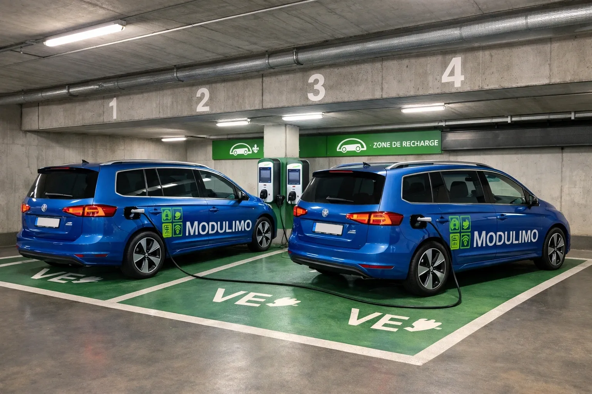
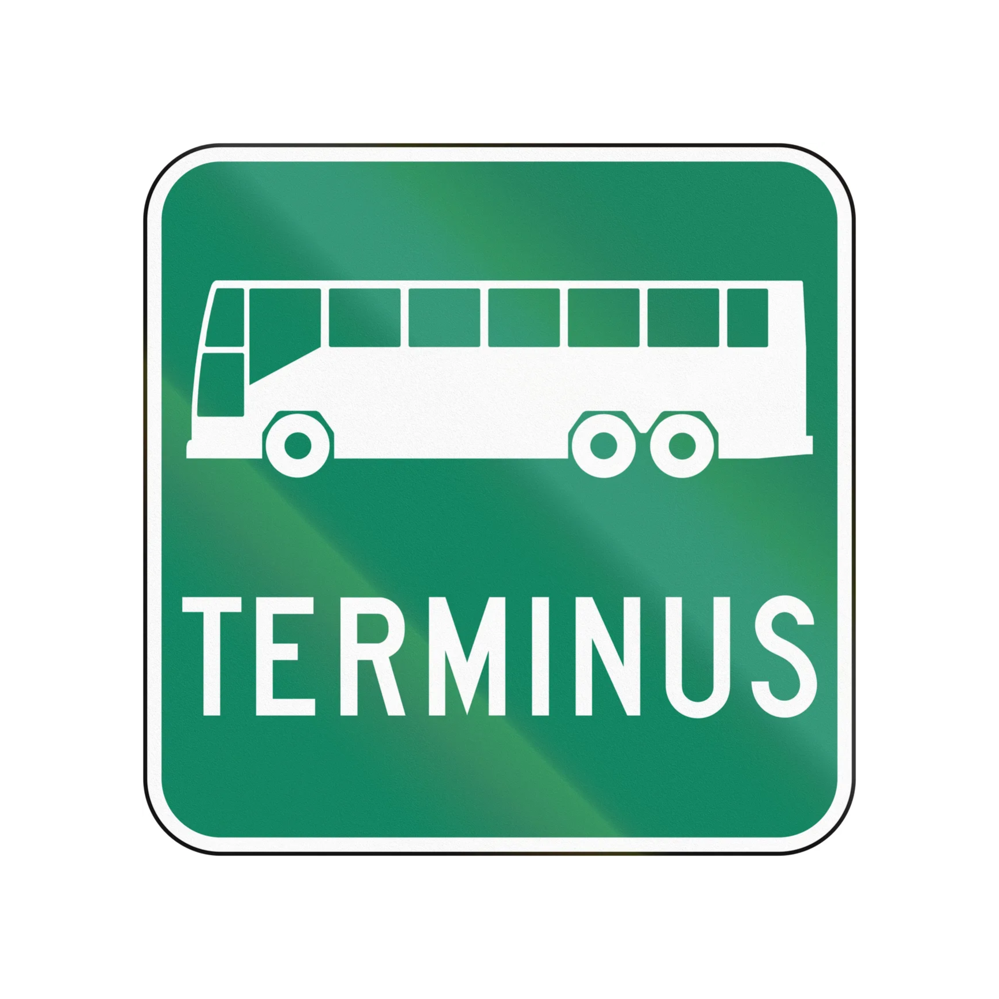
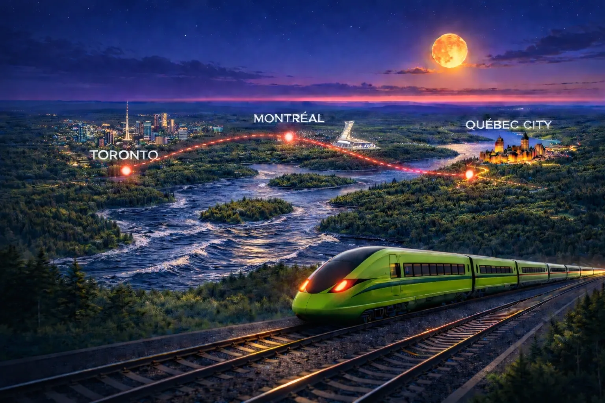

Modulimo intègre une chaîne complète de mobilité inter-modale directement dans votre milieu de vie — du vélomobile au train, du fleuve au REM.

1 à 2 minivans électriques inclus. Réservation en ligne pour résidents. Innovations pour véhicules autonomes à venir — plus besoin de chauffeur pour venir vous chercher.

L'arrêt d'autobus Bureau / 100e Avenue (PAT) est le voisin immédiat. Lignes 86, 410, 487 — terminus adjacent au projet.

Stationnement vélo et 2 vélomobiles empruntables — une innovation futuriste au cœur du projet Modulimo.
L'inter-modalité, ce n'est pas d'être "proche du métro". C'est de concevoir chaque déplacement comme une séquence fluide — où chaque mode passe le relais au suivant, sans friction, sans voiture personnelle.
Chez Modulimo, cette chaîne commence dans l'immeuble même avec les vélomobiles et s'étend jusqu'à l'aéroport international via le REM.
Chaque mode répond à un besoin précis. Ensemble, ils couvrent l'intégralité de vos déplacements — du quotidien à l'international.

La chaîne inter-modale de Modulimo sera connectée au futur train rapide Québec-Toronto. Comme Hydro-Québec a établi de nouveaux standards en élevant la tension de transport à 750 kV, le TGV/TGF représente une occasion de redéfinir la mobilité interurbaine au Québec — et Modulimo sera sur ce réseau.
Vivre sans voiture ne signifie pas vivre sans liberté. La chaîne inter-modale de Modulimo offre une portée équivalente ou supérieure à celle d'un ménage motorisé.
Un ménage sans voiture économise en moyenne 10 000 $ à 15 000 $ par année au Québec. L'inter-modalité de Modulimo transforme cette économie en qualité de vie.
Le réseau de transport collectif ne fait que croître — Train de l'Est, REM, navette fluviale. Chaque amélioration bénéficie automatiquement aux résidents Modulimo.